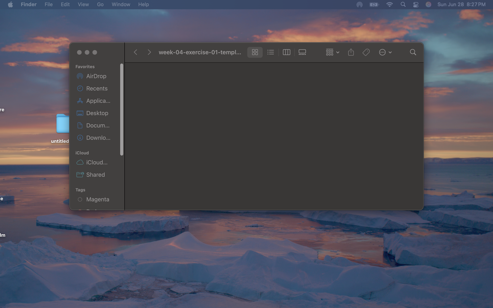

My Dev Tools Vandalism
I used browser developer tools to temporarily "vandalize" a website. Below is a screenshot showing my changes. These edits only appeared on my computer and did not affect the actual website.

What I "Vandalized"
Below are the changes I made to the FIFA website using developer tools.
- Changed the font size on the hero box from 16px to 100px
- Changed the background color to aquamarine
- Changed FIFA WORLD CUP to WEST TEXAS WIND CUP
- It took a minute to figure out how to make the changes
- With all this crazy wind an weather we have been getting, I figured this would be a fun way to express it